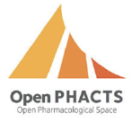

Domeo enables annotation sharing with individual colleagues, selected groups, or at web scale. Annotations are represented using an open standard, the Annotation Ontology (AO) RDF model. Other applications can access and display the annotation created through Domeo, and share their own annotation with Domeo, using AO/RDF. Text mining applications using the UIMA framework can directly export AO/RDF using Apache Clerezza.
Highlights
:: Oct 17th, 2012
The integration of antibodyregistry.org and Domeo has been presented in a poster session of the Neuroscience 2012 conference

:: May 10th, 2012
Domeo is now an Open PHACTS Development Partner

:: Dec 3rd, 2011
Domeo is now deployed in the Neuroscience Information Framework (NIF) platform for integration testing with the NIF portal.